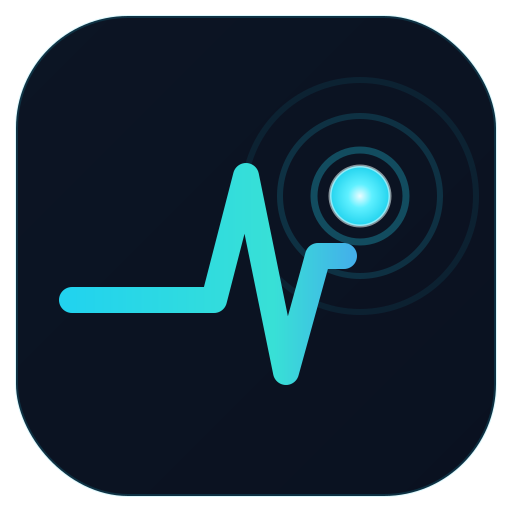

Net Pulse — Open Net Tools
A free, open-source path-latency monitor for your desktop — continuous per-hop ping + traceroute, IPv4 and IPv6, live config, per-hop ASN/BGP, alerts and exports. PingPlotter / mtr style, without the price tag or the phone-home telemetry.
Why Net Pulse
Every hop, not just the last one
Continuous per-hop ping fused with traceroute, so you can see exactly which hop on the path is dropping packets or adding latency — not just whether the destination itself is up.
Actually accurate, at scale
A direct-echo measurement model, a global send pacer, and a shared-hop cache mean running many targets at once never manufactures fake packet loss on a shared router or ISP hop. See ARCHITECTURE.md for the full engineering writeup.
IPv4 and IPv6
Full dual-stack support, including sane fallback behavior when a hostname only has one address family or your link only has one usable egress.
No telemetry, ever
No analytics, no crash reporter, no account, no cloud. Every diagnostic runs locally against hosts you choose. See the privacy policy.
Per-hop ASN / BGP context
See which network owns each hop along the path, with looking-glass links out to PeeringDB / RIPEstat for deeper digging.
More than MTR
Bundled Ping, DNS Lookup (forward + reverse), and a bounded TCP port scanner, all in the same desktop app.
Status at a glance
Each target shows a two-lamp signal — the left lamp is the destination's own health, the right lamp is the health of the route leading to it.
| Lamp | Meaning |
|---|---|
| 🟢 Green | Healthy — low latency, no loss. |
| 🟡 Yellow | Elevated latency or minor loss. |
| 🟠 Orange | Degraded — noticeably lossy or slow. |
| 🔴 Red | Unreachable, or severely degraded. |
| 🔵 Cyan (pulsing) | Route discovery in progress. |
Get started
# Download a signed installer from GitHub Releases, or build from source:
git clone https://github.com/ArchismanKarmakar/Net-Pulse-Open-Net-Tools.git
cd Net-Pulse-Open-Net-Tools
./build-and-run.ps1 # Windows
./build-and-run.sh # Linux / macOSFull build instructions, prerequisites, and troubleshooting live in the README.
Support the project
Net Pulse — Open Net Tools is free, open source (AGPL-3.0-or-later), and built and maintained independently. If it's useful to you, consider sponsoring on GitHub — it directly funds continued development, a code-signing certificate (so releases stop tripping SmartScreen/AV warnings), and testing infrastructure.